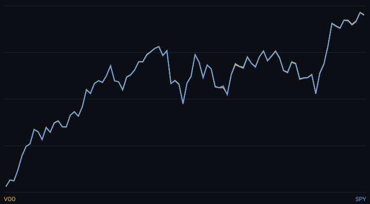

low-cost index tracking — normalized 100-index comparison of the last 90 daily bars.

Over the last 20 bars, VOO changed 4.46% and SPY changed 4.45%; over 60 bars, VOO changed 6.09% and SPY changed 6.08%. VOO sits at 97% of its 60-bar range and SPY at 97%. VOO: RSI-14 at 66 (firm zone). SPY: RSI-14 at 66 (firm zone).
Over the measured window, VOO recorded the higher 20-bar change and VOO the higher 60-bar change. Past performance is not a prediction of future results.
Open both tickers side by side in the interactive workbench and apply moving averages, MACD and RSI.
Open VOO in chartsThis content is for educational purposes only and is not investment advice. Market data is delayed at least 15 minutes.